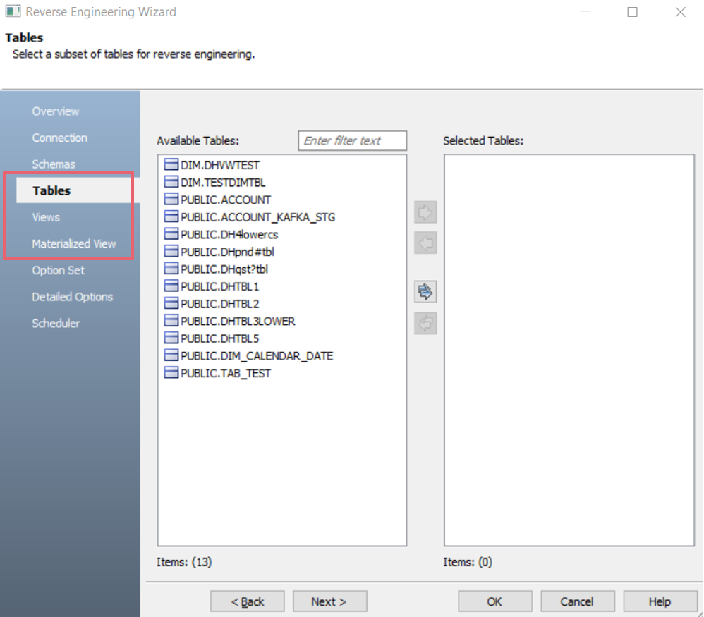
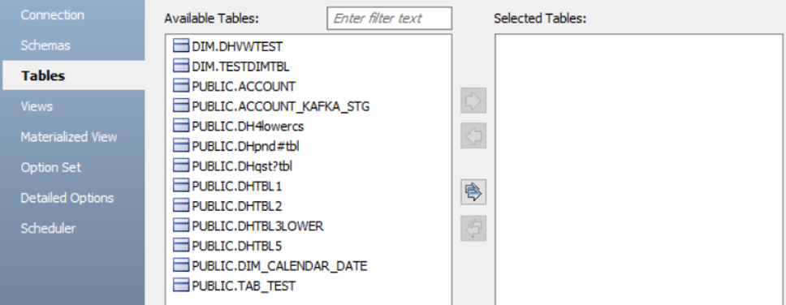
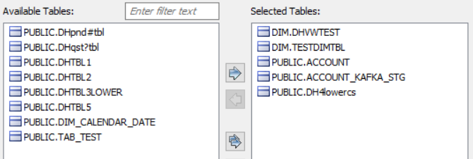

.
. Snowflake support in erwin Data Modeler (DM) 12.1 has been enhanced with the following features:
Snowflake implementation in erwin DM now supports object tagging via the Tags object for the following objects:
For more information on object tagging, refer to the Snowflake Support Summary topic.
The Reverse Engineering Wizard now includes filters for Tables, Views, and Materialized Views. These filter sections display all tables, views, and materialized views available in your database without having to select a schema during JDBC connection.
The below image displays the tables available in the database after establishing a database connection. For more information, refer to the Database Connection Parameter topic.

You can select tables, under Available Tables, that you want to reverse engineer. Then, click .

This moves the selected tables under Selected Tables.

Similarly, you can select view and materialized view objects in a database for reverse engineering. For more information on reverse engineering options, refer to the Reverse Engineering Options for Snowflake topic.
Snowflake database supports user-based key-pair authentication for reverse engineering and forward engineering models. This method requires a private key, public key, and password to connect to a database.
The following methods are available for authenticating a database connection:
To set up a database connection using an unencrypted key, you first need to generate a private key and a public key. For more information on generating keys, refer to the Key Pair Authentication & Key Pair Rotation topic in the Snowflake Documentation. Then, run the script on the Snowflake console to establish a successful connection.
To authenticate database connection using an unencrypted key, follow these steps:
To set up a database connection using an encrypted key, you need to generate private key, public key and, set an authentication password. This process also involves creating two private keys that are used to setup authentication using an encrypted key. For more information on generating keys, refer to the Key Pair Authentication & Key Pair Rotation topic in the Snowflake Documentation. Then, run the script in the Snowflake console to establish a successful connection.
To authenticate database connection using an encrypted key, follow these steps: